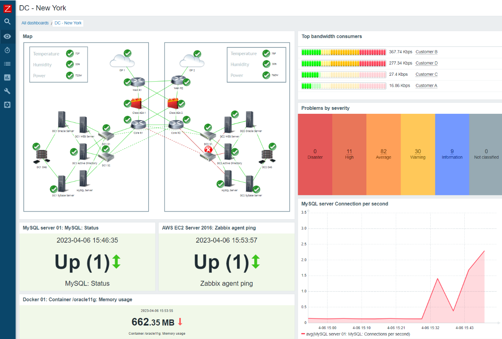

Jenkins pipeline Github
testing CI/CD live link
Zabbix est un logiciel qui supervise de nombreux paramètres réseaux ainsi que la et l'intégrité des serveurs.
Zabbix utilise un mécanisme de notification flexible qui permet aux utilisateurs de configurer une base d'alerte e-mail
et permet une réponse rapide aux problèmes serveurs.
Jenkins log

Diffuclté d'installer Github et Zabbix dans serveur
Firewall blocqué